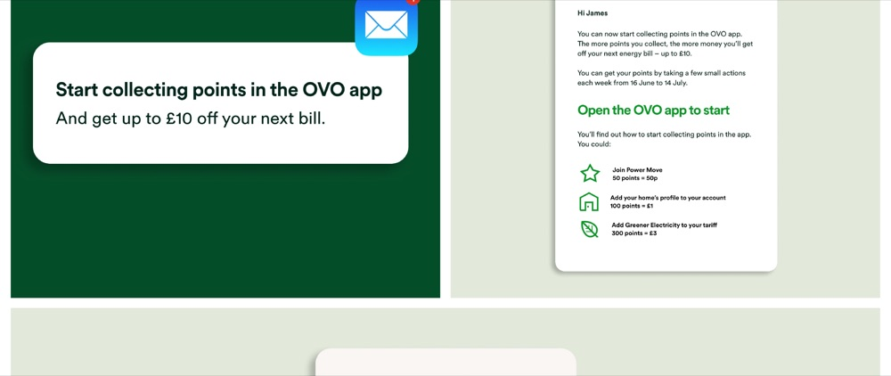
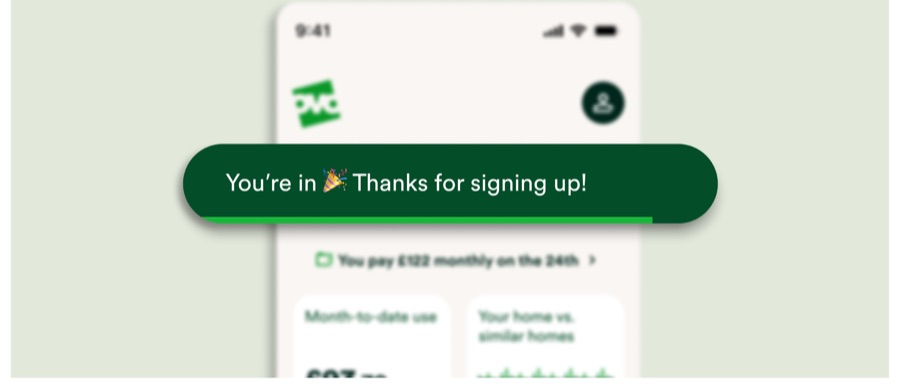
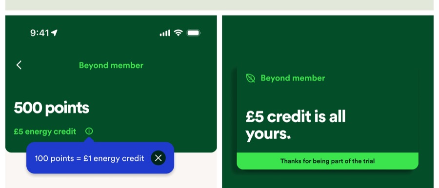
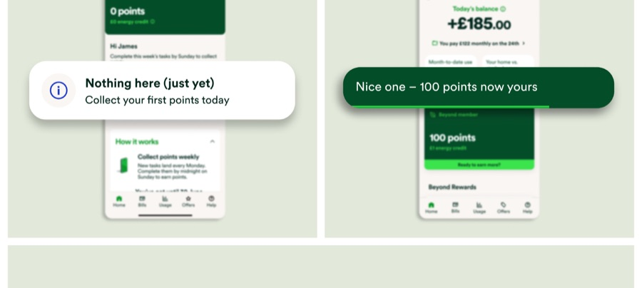

Can points boost engagement? A scoped-small pilot
A lightweight points mechanic, tested fast and small, to find out whether it could bring customers back to the app more often.
Overview
As offers and rewards grew inside OVO's Beyond programme, the team wanted to test a simple idea: would letting customers collect points for small actions bring them back more often?
Rather than build a full loyalty points system on a hunch, we scoped it deliberately small — a fixed value exchange, one sign-up moment, one dashboard — so we could get a real answer fast.
Process
Discover
Ran a workshop referencing loyalty patterns from Tesco, Boots, ASICS, and Domino's, then used Crazy 8s sketching to explore the sign-up moment, entry point, and dashboard.
Define
Mapped the full journey in Figma, including the empty states and edge cases most pilots skip in the interest of speed.
Design
Built low-fi wireframes, then working prototypes, writing all the UX content myself and checking it against product, brand, and legal.
Deliver
Proposed reusable components so the pattern could scale beyond the pilot without a rebuild, and flagged UX gaps early enough to fix before launch.
Key screens & decisions




Results
Why it worked
Owning the full experience — flows, UI, and content together — meant UX gaps got caught early rather than surfacing in testing. Keeping the pilot deliberately small made it possible to prototype fast and get a real answer, not a hypothetical one, about whether points actually changed behaviour.